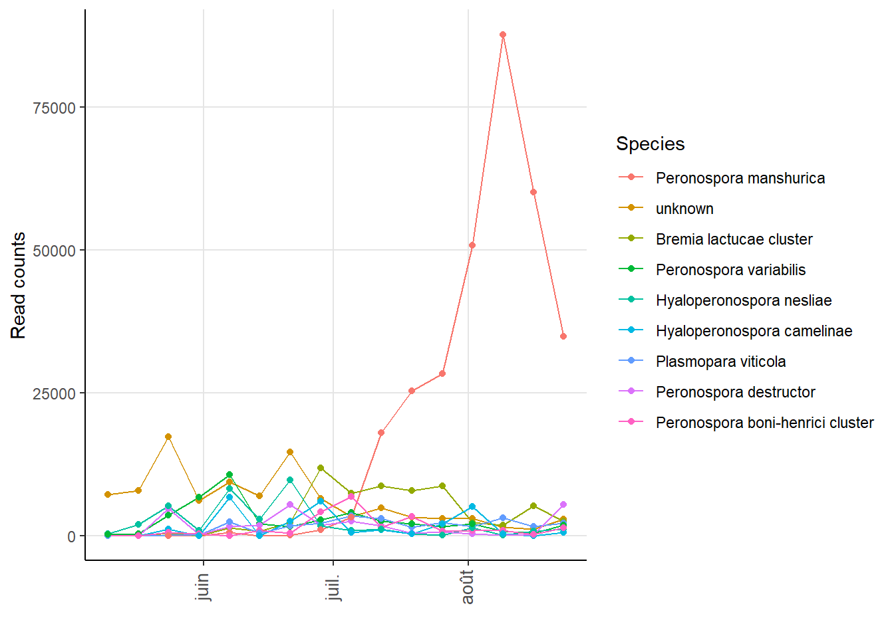
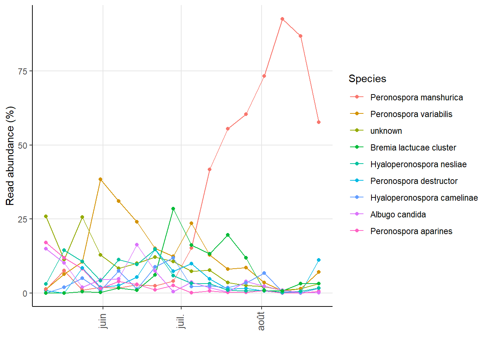
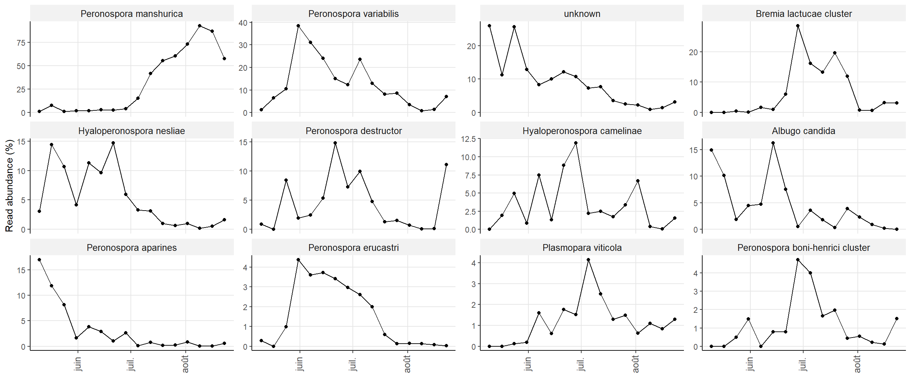
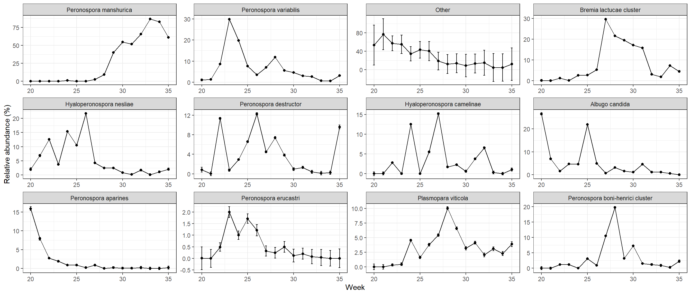
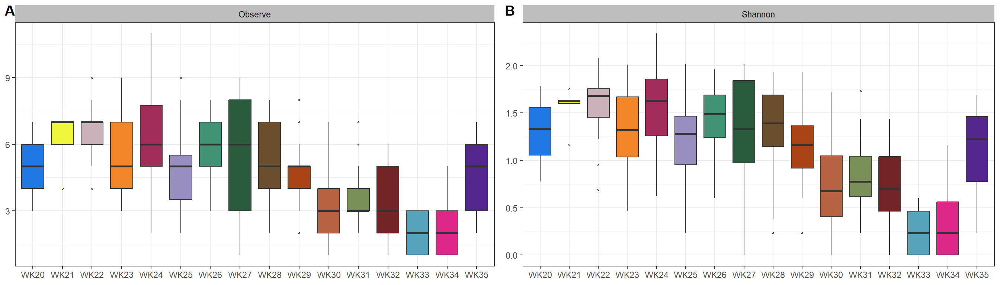

First we need to convert our phyloseq object into an Ampvis2 object, then generate the heat map with the weeks (times) in x and the sequencing technology as facets.
When data are collected over time, such as our aerobiome data, we may be tempted to explore the temporal distribution patterns of specific species. Continuing with the Ampvis2 package, we can use the amp_timeseries function to plot read distribution over time.
amp_timeseries(WorkingPS_amp,
time_variable = "Date",
tax_aggregate = "Species",
tax_show = 9,
normalise=FALSE
)
Or with read counts to be in percent per sample.
amp_timeseries(WorkingPS_amp,
time_variable = "Date",
tax_aggregate = "Species",
tax_show = 9,
normalise=TRUE
)
We can also generate our curves by species in individual graphs.
amp_timeseries(WorkingPS_amp,
time_variable = "Date",
#group_by = "seq_tech",
split = TRUE,
scales = "free_y",
tax_show = 12,
tax_aggregate = "Species",
tax_add = NULL,
normalise=TRUE,
#plotly = TRUE,
tax_empty="OTU"
)
Now let’s try reproducing this figure manually to add an error bar (Standard error). We’ll start again with the code we used for the stacked bar charts. First, let’s rework the list of predefined species to match that of the graph obtained with Ampvis2, and replace anything not in our list with “Other”:
get_cols <- function (n){
col <- c("#8dd3c7", "#ffffb3", "#bebada", "#fb8072", "#80b1d3",
"#fdb462", "#b3de69", "#fccde5", "#d9d9d9", "#bc80bd",
"#ccebc5", "#ffed6f")
col2 <- c("#1f78e4", "#ffff33", "#c2a5cf", "#ff7f00", "#810f7c",
"#a6cee3", "#006d2c", "#4d4d4d", "#8c510a", "#d73027",
"#78c679", "#7f0000", "#41b6c4", "#e7298a", "#54278f")
col3 <- c("#a6cee3", "#1f78b4", "#b2df8a", "#33a02c", "#fb9a99",
"#e31a1c", "#fdbf6f", "#ff7f00", "#cab2d6", "#6a3d9a",
"#ffff99", "#b15928")
colorRampPalette(col2)(n)
}
library(tidyverse)
WorkingPS_melt <- psmelt(WorkingPS_glom)
head(WorkingPS_melt)## OTU Sample Abundance
## 1632 2949b355cd00039476d9a808f2e76b8e IonT_QC0621WK33 397142
## 1639 2949b355cd00039476d9a808f2e76b8e IonT_QC0421WK33 393894
## 1567 2949b355cd00039476d9a808f2e76b8e IonT_QC0421WK32 342518
## 1649 2949b355cd00039476d9a808f2e76b8e IonT_QC0621WK34 327917
## 1545 2949b355cd00039476d9a808f2e76b8e IonT_QC0521WK33 307748
## 1587 2949b355cd00039476d9a808f2e76b8e IonT_QC0621WK32 270097
## InputFileName Samplename seq_tech SiteID Region Year
## 1632 B82_9_L001_R1_001.fastq.gz QC06_21_WK33 IonTorrent QC06 Sherrington 2021
## 1639 B80_9_L001_R1_001.fastq.gz QC04_21_WK33 IonTorrent QC04 Napierville 2021
## 1567 B73_9_L001_R1_001.fastq.gz QC04_21_WK32 IonTorrent QC04 Napierville 2021
## 1649 B89_9_L001_R1_001.fastq.gz QC06_21_WK34 IonTorrent QC06 Sherrington 2021
## 1545 B81_9_L001_R1_001.fastq.gz QC05_21_WK33 IonTorrent QC05 St-Edouard 2021
## 1587 B75_9_L001_R1_001.fastq.gz QC06_21_WK32 IonTorrent QC06 Sherrington 2021
## Week Week2 Date X_coord Y_coord Kingdom Phylum Class
## 1632 WK33 33 2021-08-09 45.13174 -73.4719 Eukaryota Oomycota Stramenopiles
## 1639 WK33 33 2021-08-09 45.18664 -73.3426 Eukaryota Oomycota Stramenopiles
## 1567 WK32 32 2021-08-02 45.18664 -73.3426 Eukaryota Oomycota Stramenopiles
## 1649 WK34 34 2021-08-16 45.13174 -73.4719 Eukaryota Oomycota Stramenopiles
## 1545 WK33 33 2021-08-09 45.19820 -73.5421 Eukaryota Oomycota Stramenopiles
## 1587 WK32 32 2021-08-02 45.13174 -73.4719 Eukaryota Oomycota Stramenopiles
## Order Family Genus Species
## 1632 Peronosporales Peronosporaceae Peronospora Peronospora manshurica
## 1639 Peronosporales Peronosporaceae Peronospora Peronospora manshurica
## 1567 Peronosporales Peronosporaceae Peronospora Peronospora manshurica
## 1649 Peronosporales Peronosporaceae Peronospora Peronospora manshurica
## 1545 Peronosporales Peronosporaceae Peronospora Peronospora manshurica
## 1587 Peronosporales Peronosporaceae Peronospora Peronospora manshuricapredefined_species = c("Peronospora manshurica",
"Peronospora variabilis",
"Bremia lactucae cluster",
"Hyaloperonospora nesliae",
"Peronospora destructor",
"Hyaloperonospora camelinae",
"Albugo candida",
"Peronospora aparines",
"Peronospora erucastri",
"Plasmopara viticola",
"Peronospora boni-henrici cluster"
)
WorkingPS_melt2 <- WorkingPS_melt %>%
mutate(Species = case_when(
Species %in%
predefined_species ~ Species, # Keep species from the list
TRUE ~ "Other" # Replace other species with "other"
))Now we need to add a column for standard error (SE) in addition to relative abundance (rel_abund).
genus_abundance2 <- WorkingPS_melt2 %>%
group_by(Week2) %>%
mutate(rel_abund = Abundance / sum(Abundance)*100) %>%
mutate(SE = sd(rel_abund)/sqrt(length(rel_abund))) %>%
ungroup() %>%
select(-Abundance) %>%
pivot_longer(c("Kingdom", "Phylum", "Class", "Order", "Family", "Genus", "Species"),
names_to="level",
values_to="taxon")%>%
mutate(taxon = factor(taxon,
levels=c("Peronospora manshurica",
"Peronospora variabilis",
"Other",
"Bremia lactucae cluster",
"Hyaloperonospora nesliae",
"Peronospora destructor",
"Hyaloperonospora camelinae",
"Albugo candida",
"Peronospora aparines",
"Peronospora erucastri",
"Plasmopara viticola",
"Peronospora boni-henrici cluster"
)))Then, summarize the data at the species level and pipe that into ggplot2 to get our line plot for the predefined species with error bars.
genus_abundance2 %>%
filter(level=="Species") %>%
group_by(Week2, taxon) %>%
summarize(rel_abund = sum(rel_abund), SE=sum(SE)) %>%
group_by(Week2, taxon) %>%
summarize(mean_rel_abund=mean(rel_abund), SE = mean(SE), .groups="drop") %>%
ggplot(aes(x=Week2, y=mean_rel_abund, fill=taxon))+
geom_point()+
geom_errorbar(aes(ymin=mean_rel_abund-SE, ymax=mean_rel_abund+SE), width=0.2)+
geom_line()+
facet_wrap(vars(taxon), nrow = 3, scales="free")+
labs(x="Week",
y="Relative abundance (%)")+
theme_bw()+
theme(legend.position="none")
In addition to the distribution of the relative abundance of one or more species over time, we may also be interested in looking at the evolution of alpha diversity as a function of time.
library("MicrobiotaProcess")
alpha_oom <- get_alphaindex(WorkingPS_glom)
head(as.data.frame(alpha_oom))## Observe Chao1 ACE Shannon Simpson Pielou
## IonT_QC0221WK20 3 3.00 4.125000 0.7774621 0.4609375 0.7076765
## IonT_QC0221WK22 7 8.00 10.224852 1.7214023 0.7812500 0.8846258
## IonT_QC0221WK23 3 3.00 3.527111 0.8815323 0.5546875 0.8024052
## IonT_QC0221WK24 7 7.25 8.152381 1.8037194 0.8125000 0.9269284
## IonT_QC0221WK25 4 4.00 4.603259 1.1626998 0.6484375 0.8387106
## IonT_QC0221WK26 3 3.00 3.000000 1.0821955 0.6562500 0.9850568
## InputFileName Samplename seq_tech SiteID
## IonT_QC0221WK20 B1_9_L001_R1_001.fastq.gz QC02_21_WK20 IonTorrent QC02
## IonT_QC0221WK22 B4_9_L001_R1_001.fastq.gz QC02_21_WK22 IonTorrent QC02
## IonT_QC0221WK23 B10_9_L001_R1_001.fastq.gz QC02_21_WK23 IonTorrent QC02
## IonT_QC0221WK24 B16_9_L001_R1_001.fastq.gz QC02_21_WK24 IonTorrent QC02
## IonT_QC0221WK25 B22_9_L001_R1_001.fastq.gz QC02_21_WK25 IonTorrent QC02
## IonT_QC0221WK26 B29_9_L001_R1_001.fastq.gz QC02_21_WK26 IonTorrent QC02
## Region Year Week Week2 Date X_coord Y_coord
## IonT_QC0221WK20 Frelighsburg 2021 WK20 20 2021-05-10 45.05353 -72.8625
## IonT_QC0221WK22 Frelighsburg 2021 WK22 22 2021-05-24 45.05353 -72.8625
## IonT_QC0221WK23 Frelighsburg 2021 WK23 23 2021-05-31 45.05353 -72.8625
## IonT_QC0221WK24 Frelighsburg 2021 WK24 24 2021-06-07 45.05353 -72.8625
## IonT_QC0221WK25 Frelighsburg 2021 WK25 25 2021-06-14 45.05353 -72.8625
## IonT_QC0221WK26 Frelighsburg 2021 WK26 26 2021-06-21 45.05353 -72.8625Observe_status <- ggbox(alpha_oom,
geom="boxplot",
factorNames="Week",
compare = FALSE,
testmethod = "wilcox.test",
signifmap = FALSE,
indexNames="Observe")+
theme( legend.position="none")+
theme(strip.background = element_rect(colour=NA, fill="grey"))+
scale_fill_manual(values=get_cols(16))
Shannon_status<- ggbox(alpha_oom,
geom="boxplot",
factorNames="Week",
compare = FALSE,
testmethod = "wilcox.test",
signifmap = FALSE,
indexNames="Shannon")+
theme(legend.position="Bottom")+
theme(strip.background = element_rect(colour=NA, fill="grey"))+
scale_fill_manual(values=get_cols(16))
library("ggpubr")
ggarrange(ggarrange(Observe_status,
Shannon_status,
ncol = 2, labels = c("A", "B"),
heights = c(2.5, 1)))